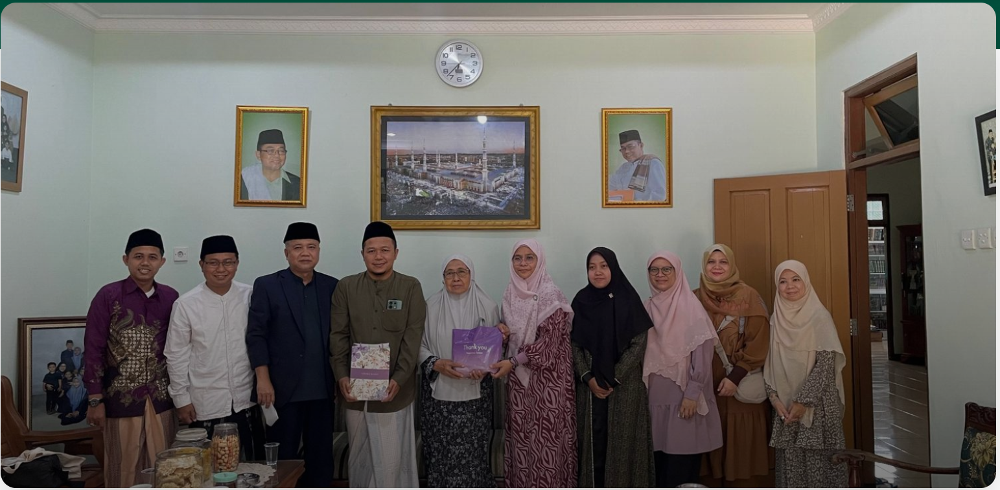
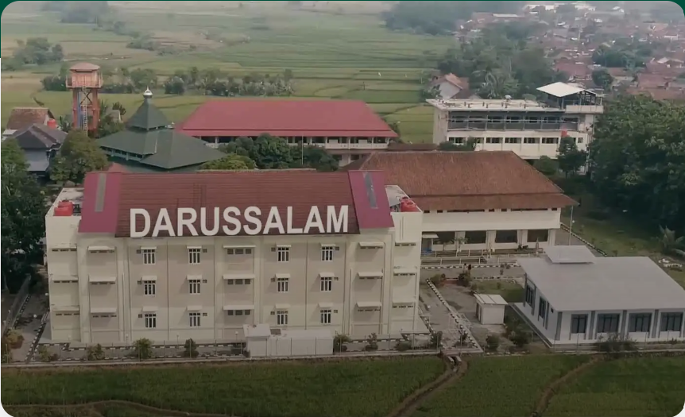
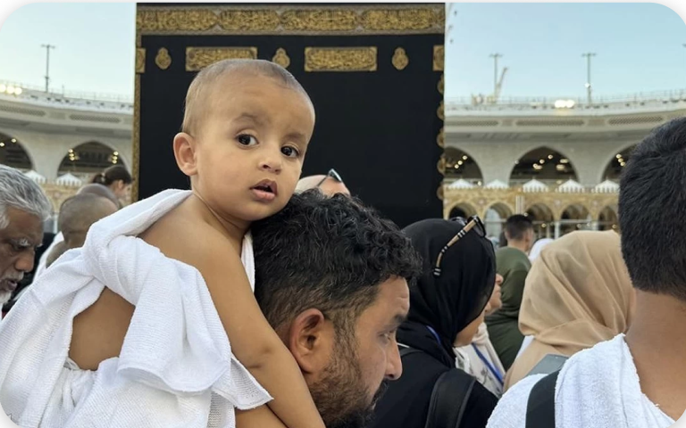

detailPondok Pesantren Darussalam Dukuhwaluh Purwokerto menerima kunjungan akademik dan wawancara penelitian dari rombongan dosen Universiti Sains Islam Malaysia (USIM), Malaysia.
31 Mei 2026
detailSebagai lembaga pendidikan Islam yang memadukan konsep salaf dan modern, Pondok Pesantren Darussalam Purwokerto mempunyai berbagai kegiatan akademik maupun non-akademik yang rutin dilakukan.
30 Maret 2021
Menurut jumhur ulama hajinya sah. Merujuk kepada kitab Tuhfat al-Ahwadzi terdapat keterangan tentang masalah ini yang menjadi rujukan para ulama.
13 Juni 2024